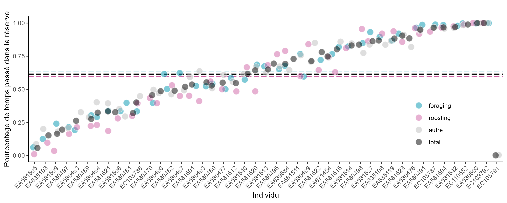
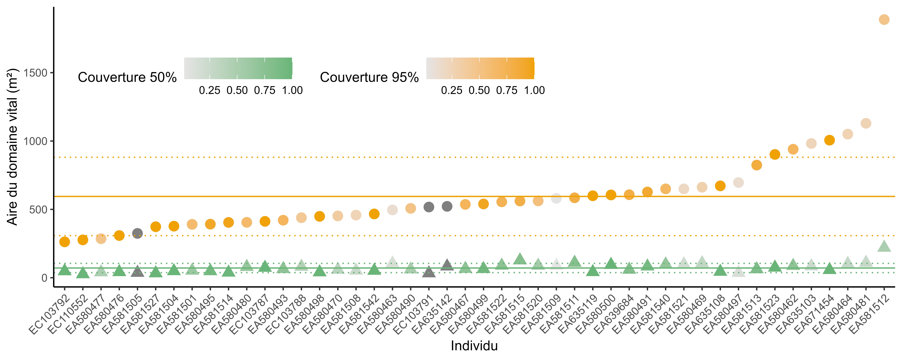
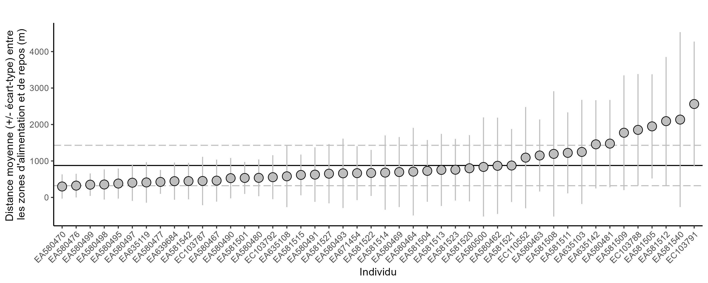
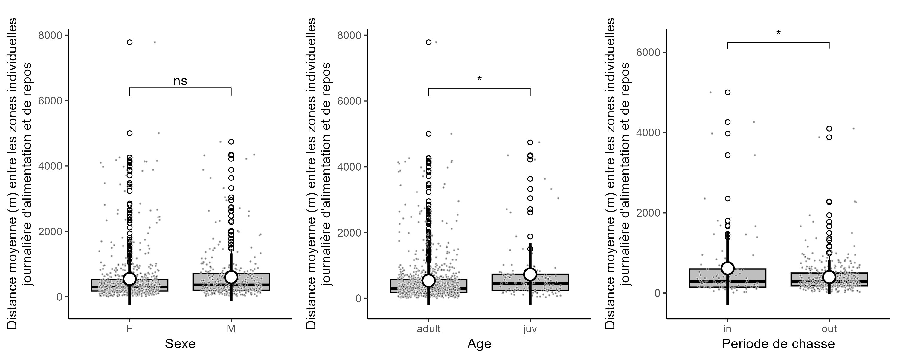
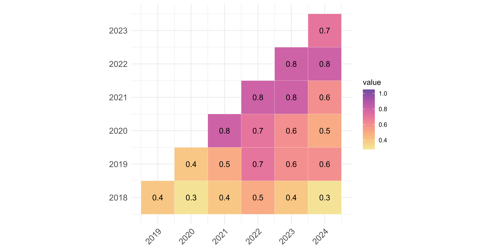
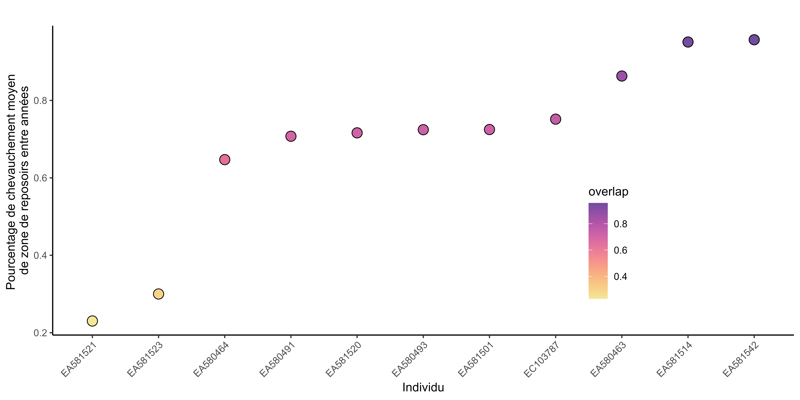
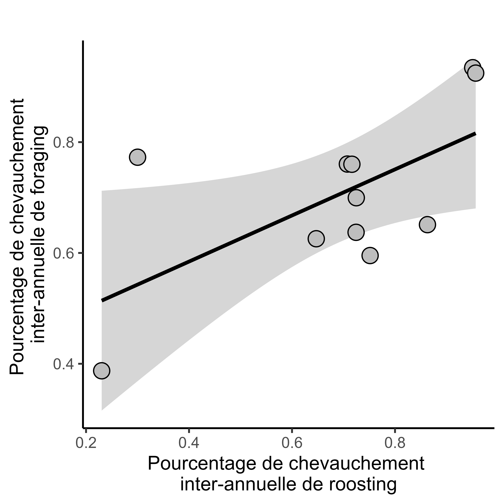
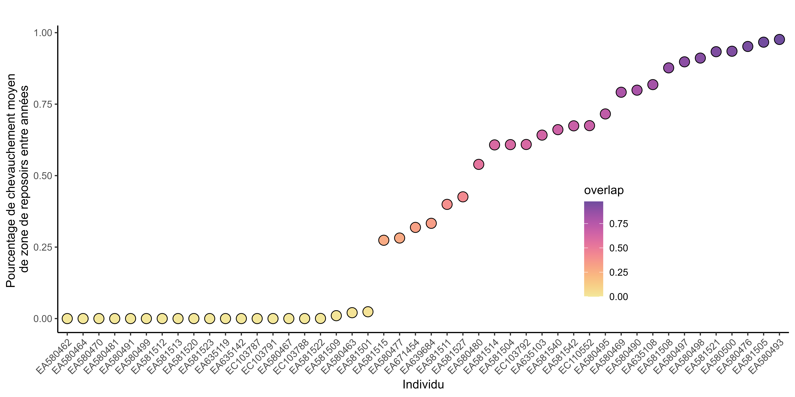
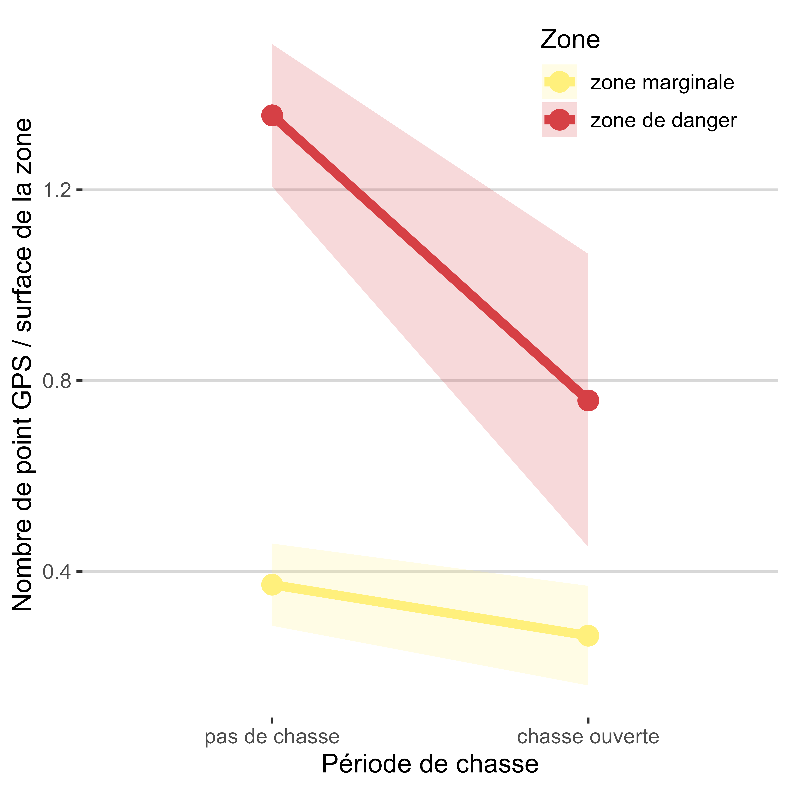

Utilisation de l’espace par le Courlis cendré aux alentours de la réserve de Moëze-Oléron
Introduction
Depuis 2015, la Ligue pour la Protection des Oiseaux (LPO-France), en collaboration avec les laboratoires LIttoral ENvironnement et Sociétés (LIENSs, UMR 7266, CNRS - Université de La Rochelle) et le Centre d’Écologie et des Sciences de la Conservation (CESCO, UMR 7204, CNRS - MNHN - Sorbonne Université), bague et équipe de GPS des Courlis cendré au sein de la Réserve Naturelle Nationale de Moëze-Oléron (Figure 1).
L’objectif général de cette étude est de mieux comprendre l’utilisation de l’espace par ces oiseaux dans un site fonctionnel comprenant le bassin de Marennes et le marais de Brouage (Figure 2). Cette recherche s’inscrit dans un contexte de recul du trait de côte, entraînant une maritimisation progressive de la réserve naturelle, et de fortes pressions anthropiques (chasse, pêche à pied, ostréiculture). Il s’agit d’identifier et de proposer des zones prioritaires à préserver pour l’accueil des limicoles.
À partir de l’analyse des données issues de balises GPS posées sur plusieurs dizaines de courlis cendrés dans la réserve, l’objectif principal est de produire un atlas dynamique décrivant l’usage de l’espace par ces oiseaux, en lien avec les activités humaines et les effets de la maritimisation.
Le travail présenté ici propose une cartographie fine de la répartition des courlis dans le site fonctionnel de la réserve de Moëze-Oléron en fonction des fluctuations environnementales et des perturbations anthropiques dédectées et mesurables sur la zone.
Cette étude s’inscrit dans le cadre du projet « Adaptation des limicoles aux changements climatiques ».
Atlas dynamiques
Le détails des méthodes est disponible dans le document Readme du projet.
La zone d’étude
La zone d’étude (voir Figure 2) est un rectangle de 623.5 km² qui s’étend :
- au Nord jusqu’à l’estuaire de la Charente,
- à l’Est jusqu’à la limite Est de la ville de Rochefort,
- au Sud jusqu’à l’estuaire de la Seudre,
- et à l’Ouest jusqu’à la facade Est de l’ile d’Oléron, englobant ainsi zone fonctionnellle du bassin de Marennes, la réserve de Moëze-Oléron et le marais de Brouage.
Les études sur la zone globale ont été effectué avec un grain spatial large en grille de 100 m x 100 m. Les études sur les zones réduites A, B, C, D et E ont été effectués avec un grain spatial fin en grille de 10 m x 10 m.
Les données GPS utilisées
Nettoyage des données GPS
Le nettoyage des données issues des balises GPS a principalement été effectué à l’aide du package R adehabitat.
En résumé, les points utilisé pour déterminé les comportements d’alimentation et de repos sont stationnaire (vitesse inférieure ou égale à 0.5km/h). Pour que chaque individu ait le même poids dans les analyses, un point toutes les 5 min a été estimé pour chaque individus. Uniquement les points situés dans la zone d’étude ont été utilisé. Le temps entre chaque point de localisation sauvegardé par individé pouvant varier et propoquer des périodes de carences de données plus ou moins longues, les périodes où la balise GPS de l’oiseau a enregistré plus d’un point par période de 5 min ont été analyses (éviter d’analyser des positions GPS trop peu précises et de résolutions temporelles hétérogènes). Une limite basses de 100 points estimés par individus sur une période supérieure à de fois 28 jours (deux cycles lunaires) à été appliqué pour maintenir une très haute qualité de suivi des individus pour les analyses.
Taille du jeu de données analysé
Temps passé dans la réserve de Moëze-Oléron
Le temps passé dans la réservé est estimé comme le nombre de point GPS observés dans et hors réserve pour chaque individu. Chaque pour représente 5 min de temps.
Pourcentage moyen de temps passé dans la réserve pour :
- les comportements de repos : 0.597 %
- les comportements d’alimentation : 0.631 %
- tous autres comportements : 0.619 %
- tous les comportements réunis : 0.610 %

Domaines vitaux au sein de la réserve de Moëze-Oléron
Les domaines vitaux (“home range”) individuels sont estimés à partir de tous les points (tous comportements confondus), en utilisant les fonctions kernelUD et getverticeshr du package “adehabitatHR”.
Deux domaines vitaux sont estimés pour chaque individus, le 1er à partir de 95% de l’aire totale de tous les points de l’individu, le 2ème à partir de 50% (Figure 4).
La règle de Silverman est utilisé pour estimer le meilleur smoothing paramètre “h” à chaque sous jeux de données, puis “h” est divisé par 2 pour affiner la précision des cartes.
Aire (en m²) des domaines vitaux individuels estimés à 95% (points) et 50% (couleurs) des observations (Figure 5, Figure 6).

Identification des reposoirs

Le comportement de repos est défini comme un point GPS d’une vitesse de déplacement inférieure ou égale à 0.5 Km/h et entre 2h avant et 2h après la marée hautes. La vitesse de déplacement pour chaque point GPS a été estimé par partir de la fonction speedfilter du package “adehabitatHR”.
Les reposoirs sont estimé à partir des données de l’ensemble des individus, soit de façon global (Figure 8) sur toute la zone d’études (sur des grilles de 100m x 100m), soit de façon plus fine (Figure 9) sur les zones spécifiques A, B, C, D et E (voir Figure 2, sur des grilles de 10m x 10m). Les reposoirs sont identifié à l’aide de la fonction kernelUD du package “adehabitatHR”.
Méthode 2 : identification des hotspots (avec au moins 3 individus qui utilisent la zone)
Les reposoirs peuvent varier en fonction de la hauteur d’eau lors des marées hautes (Figure 11).
Le marégraphe utilisé pour obetenir les hauteurs d’eau (en m) est celui de l’ile d’Aix en priorité, puis corrélation avec la cotinière et la rochelle quand il y a des trous. La hauteur d’eau est moyennée pour chaque période du grain temporelle choisi (5 min). La variable choisi pour la hauteur d’eau est la variable “validé temps différé” en priorité, puis “brute temps différé”, puis “brute haute fréquence”. Les données de hauteurs d’eau ont été téléchargée via le site du SHOM.
Le type de de marée hautes en fonction de la hauteur est défini comme :
- marée de mortes eaux : inférieur à 4.8m
- marée de vives eaux : entre 4.8m et 6.4m
- submersion de la réserve : supérieur à 6.4m
Reposoir en fonction de l’age
L’âge des individus est déterminé au baguage grâce au plumage des individus. Les individus juvéniles lors du baguage et de la pose du GPS deviennent adultes après le 1er septembre de l’année suivante.
Reposoir en fonction du sexe
Le sexe des individus a été déterminé lors de la pose des GPS.
Identification des zones d’alimentation

Sur le Bassin de l’Ile d’Oléron - Pointe d’Arceau et pointe de Bellevue (Auteur : Idaho69).
Le comportement d’alimentation est défini comme un point GPS d’une vitesse de déplacement inférieure ou égale à 0.5 Km/h et entre 2h avant et 2h après la marée base. La vitesse de déplacement pour chaque point GPS a été estimé par partir de la fonction speedfilter du package “adehabitatHR”.
Les zones d’almimentation sont estimées à partir des données de l’ensemble des individus, soit de façon global (Figure 14) sur toute la zone d’études (sur des grilles de 100m x 100m), soit de façon plus fine (Figure 15) sur les zones spécifiques A, B, C, D et E (voir Figure 2, sur des grilles de 10m x 10m). Les zones d’alimentation sont identifiées à l’aide de la fonction kernelUD du package “adehabitatHR”.
Zone d’alimentation en fonction de l’age
Zone d’alimentation en fonction du sexe
Distance entre les reposoirs et les zones d’alimentation
La distance entre la zone d’alimentation et de repos a été estimé comme la distance entre les paires de centroïds géographiques individuels des zones d’alimetation et de repos à chaque cycle de marais (Figure 19).
Il y a une corrélation significative (p-value : 6.93e-16 ***) entre la distance individuelle moyenne alimentation-repos et sa variance : les individus qui font le plus loin en moyenne sont aussi ceux qui varient le plus dans la distance parcours à chaque cycle de marais.

Les distances à chaque cycle de marais des paires de centoïds indivudelles entre les zones d’alimentation et de repos ont été comparé entre les mâles et les femelles, et les adultes et les juvéniles (Figure 20).
Les juvéniles parcourent significativement plus de distance entre leurs zones d’alimentation et de repos que les adultes. Il n’y a pas de différence significatives entre les mâles et les femelles.

Fidélité aux espaces
Afin d’estimer la fidélité au espace, pour le repos, comme pour l’alimentation, des zones d’utilisation principale de l’espace sont estimée en fonction des années ou des mois, puis le chvauchement de ces zones est estimé deux à deux. Un fort chevauchement équivaut à une forte similarité entre les zones au cours du temps, ce qui équivaut à une forte fidélité aux espaces.
Changement au cours des années
La fidélité aux espaces de repos et d’alimentation sont estimé entre années. Une analyses à l’échelle de la population (Figure 21, ?@fig-plot_overlapp_roosting_year_repet_pop) et par individu (?@fig-plot_roosting_year_repet, Figure 24) ont été effectué.
Reposoirs
Analyses globales :

Analyses individuelles :

Reposoirs annuelles individuelles.
Zones d’alimentation
Analyses globales :

Analyses individuelles :

Correlation entre la fidélité aux reposoirs et aux zones d’alimentation
Il y a une corrélation significative de la fidélité entre années et individuelle aux reposoir set aux zones d’alimentation (p-value : 0.039 *, adj-R² : 0.32). Les individus qui sont fortement fidèle à leur zone d’alimentation le sont aussi pour leur reposoirs.

! Changement au cours des mois
! Reposoirs
! Zone d’alimentation
Changement au cours des cycles de marée
Reposoirs

! Alimentation
Quelles zones de report des oiseaux lors des fluctuations environnementales et des perturbations anthrophiques ?
Fluctuation de l’utilisation de l’espace entre le jour et la nuit
Les périodes de jour et de nuit sont définies sur la base des levers et couchers du soleil issus du logiciel de marée “wxtide32”.
Reposoir en fonction du jour et de la nuit.
Zone d’alimentation en fonction du jour et de la nuit.
! Changement dans l’utilisation de l’espace avant vs. après l’ouverture de la digue, mise en place de la brèche ?
XX
brèche, ouverture de la digue : variable “brèche” : avant/après 2018 ; “brèche _summary” : digue intacte < 2018, ouverture progressive < 2021/07 ; ouverture complète > 2021/07 ; variable “bèche_detail” : “digue intacte” < 2018, ), “ouverture progressive” < 2020-10-01, “disparition du seuil” < 2021-07-01,“ouverture complète” > 2021-07-01
Utilisation de l’espace par les Courlis cendré lors d’évènements climatiques extrêmes
Les données météorologiques sont issues du site météostat pour la station météorologique de La Rochelle.
Les évènements climatiques extrêmes (ECE) sont généralement définis comme les évènements d’intensité supérieure (ou inférieur) au quartile 95% des distributions du paramétres météorologiques (REF) sur la période 2015-2024.
Ici, les paramètres météorologiques étudiés sont :
- la vitesse moyenne journalière du vent
- l’orientation moyenne journalière du vent
A partir de ces deux paramètres météorologiques, 3 paramètres météorologiques extrèmes ont été calculés :
- les évènements de vent fort : ECE supérieur à 95%
- les évènements de vent de Nord-Ouest : orientation entre 270 et 360 degrés
- les évènements de vent fort de Nord-Ouest : ECE supérieur à 80% et d’orientation entre 270 et 360 degrés
Vents forts
Vent de Nord-Ouest
Vents forts de Nord-Ouest
Chasse

Chasse à pied
Période de chasse.
Jour avec ou sans chasseur pendant la période de chasse.
Nombre de chasseur pendant la période de chasse.
Chasse à la tonnes
La chasse à la tonnes est une forme de chasse dite traditionnelle se pratiquant de nuit à l’affût dans des tonnes de chasse Figure 48. Les tonnes de chasses sont des constructions en dur, enterrées ou semi-enterrées et camouflés au bord d’une plan d’eau (la mare à la tonne).

Modèle statistiques utilisé (packages “lmerTest”) :
nombre de point GPS ~ zone * periode de chasse + (individu)
Modèle linéaire mixte, uniquement sur les points GPS enregistrés de nuit.
Le nombre de point GPS est rapporté à la surface totale de chaque zone (danger ou proximité).
Zone et période de chasse sont des effets fixes.
Individu est une effet aléatoire.

Tableau de resultats du modèle :
| Effets fixes | ||||||||
|---|---|---|---|---|---|---|---|---|
| Coefficient | Erreur Std | t | df | p-value | IC 2.5% | IC 97.5% | Signif. | |
| Intercept | 3.72 × 10−1 | 4.39 × 10−2 | 8.48 | 57.51299 | 1.03 × 10−11 | 2.84 × 10−1 | 4.60 × 10−1 | *** |
| Zone de danger | 9.83 × 10−1 | 7.00 × 10−2 | 1.40 × 101 | 1083.16983 | 2.87 × 10−41 | 8.46 × 10−1 | 1.12 | *** |
| Chasse ouverte | −1.07 × 10−1 | 4.41 × 10−2 | −2.42 | 1075.82900 | 1.56 × 10−2 | −1.93 × 10−1 | −2.03 × 10−2 | * |
| Zone de danger : chasse ouverte | −4.91 × 10−1 | 1.68 × 10−1 | −2.93 | 1065.17588 | 3.48 × 10−3 | −8.19 × 10−1 | −1.62 × 10−1 | ** |
| Variance des effets aléatoires | ||
|---|---|---|
| Effet | Variance | Écart-type |
| ID | 6.34 × 10−2 | 2.52 × 10−1 |
| Residual | 3.55 × 10−1 | 5.96 × 10−1 |
| R² | |
|---|---|
| R2 conditional | R2 marginal |
| 0.29 | 0.17 |
! Pêche à pied
- Zone de pêche
- Effort de pêche
- Période de pêche
Discussion
Reproductibilité des analyses
Toutes les analyses, graphiques et cartes ont été produites à l’aide du logiciel R version XXX et RStudio version XXX.
- Lisez le READme
Voir le READme pour les détails sur les jeux de données et les méthodes.
- Les données analysées
Toutes les données utilisées sont disponibles ici : XX
Cloner le dépôt
git clone [CourlisServeur](https://github.com/SuzanneBonamour/CourlisServeur.git)Installer les dépendances
Ouvrez R et exécutez :
- Lancer les scripts
Tous les scripts pour le nettoyage des données GPS, les analyses spatiales et les cartographies sont disponibles sur le github repository XX. Afin de repoduire les résultats, faire tourner les scripts les uns après les autres par ordre alphabétique “A_Courlis_GPS_x”, puis “B_Courlis_ENV_x”, etc…
Bibliographie
XX
Travail de terrain
Pierre Rousseau, Loic Jomat, Romain Beaubert et Adrien Chaigne ont bagué et équipé de GPS les Courlis cendrés afin d’obtenir les données nécessaires à ces analyses.
Remerciements
Je remercie chaleureusement :
- Les meilleures co-bureaux : Anaïs et Marine
- Anais une fois de plus pour nos brainstorming récurrents !
- Les membres sympathiques du Cambouis pour leur bons conseils et nos discussions endiablées à base data et de code <3
Contact
Analyses et rédaction de l’atlas par Suzanne Bonamour, chargée de traitement de données, LPO France.
Pour toute question, contactez-moi à : suzanne.bonamour@lpo.fr.